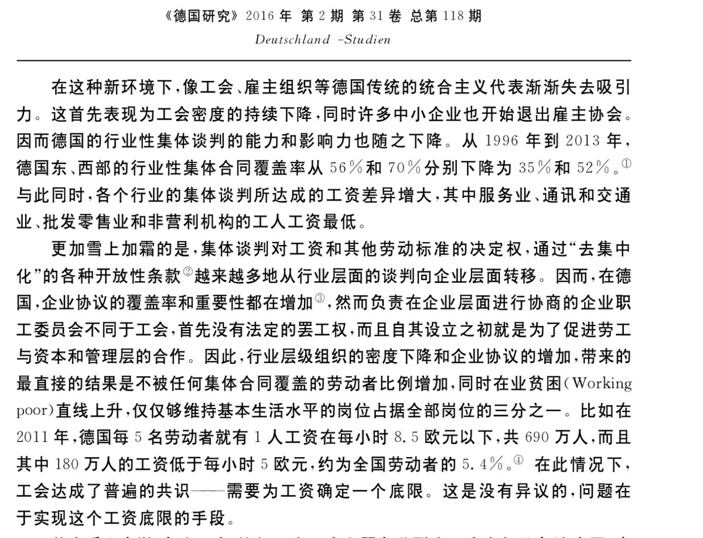

𝐀𝐬𝐡𝐥𝐞𝐲 𝐁𝐥𝐨𝐜𝐤🍥🌹🇹🇼🇪🇺🏳️⚧️
@bolckAshley
@HpBwFwGBPytCpgs 圖片裡顯示的集體談判率下降，本質上是經濟全球化對傳統工業體系的侵蝕，而不是政黨政治的『報仇雪恨』。 事實上，德國工會仍然是世界上最強大的社會力量之一，他們甚至能推動中右翼政府通過最低工資法。
而且說白了，政黨為啥會輪替？還不是做的不夠好民眾才會轉投別的政黨？

都是阿共的陰謀🏴☠️🏴
@HpBwFwGBPytCpgs
@bolckAshley 英国工党撒切尔上台之后就开始大私有化，密特朗的财富税在下台之后就给废除了，西班牙的劳工保护法也被削成路边了，捷克社民党提高的公司税又被后来右翼降回去了，拉美国家左翼上台的也不少，结果哪个国家不是下台之后右翼马上就开始报仇雪恨般的私有化。德国工会权利（写不下看图）。大逆转不是新鲜事 https://t.co/rFwWDwPeSh